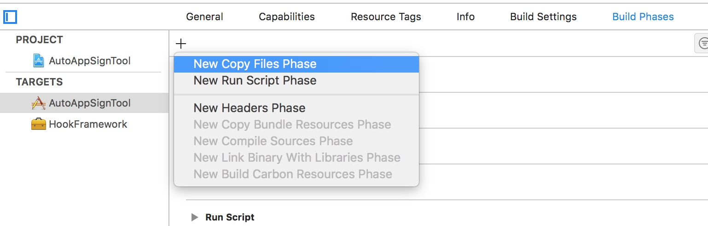
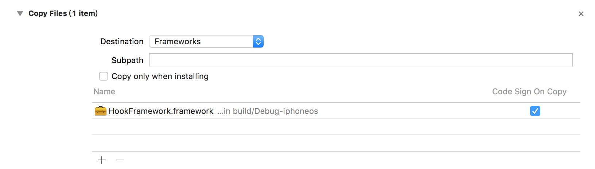
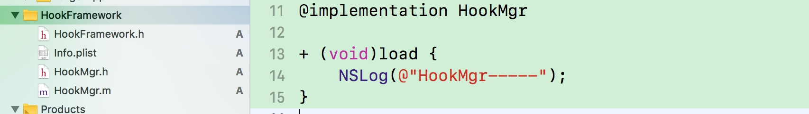

Framework注入
1. 新建TARGETS

2. 添加依赖关系
- 在
Buildd Phases选择New Copy Files Phase新建依赖库文件，选择Destination为Framework。添加刚刚新建的frammework库


- 验证
frammewor注入库添加依赖是否成功
编译程序，打开Products下app文件，包内容下Frameworks文件下已生成对应注入库
3. 修改MachO文件的Load Commands（将frammewor库注入到可执行文件中）
- 使用
yololib工具注入（手动）
$ yololib WeChact Frameworks/HookFramework.framework/HookFramework
- 使用
yololib工具注入（脚本）
# 需要注入的动态库的路径(写死了)
INJECT_FRAMEWORK_RELATIVE_PATH="Frameworks/HookFramework.framework/HookFramework"
## 通过工具实现注入
"/${SRCROOT}"/yololib "$TARGET_APP_PATH/$APP_BINARY" "$INJECT_FRAMEWORK_RELATIVE_PATH"
- 使用
MachOView工具查看是否注入成功

4. 注入代码
在HookFramework库下创文件，实现load方法，利用Method Swizzle实现修改
